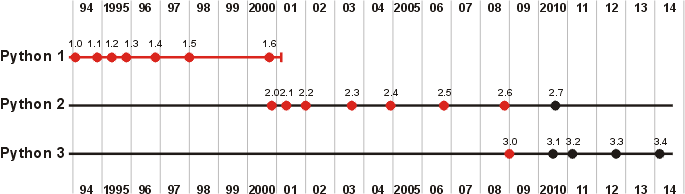

El Salto Generacional
A lo largo de 30 años, Python ha evolucionado para resolver los retos de cada era tecnológica.
La siguiente imagen muestra la fecha de publicación de las versiones principales de Python, en cada una de las 3 grandes versiones, Python 1, 2 y 3. Las versiones con el punto rojo son versiones ya obsoletas y las versiones con el punto azul se siguen publicando, actualizando y las versiones con el punto blanco corresponde a versiones futuras con fechas de publicación previstas ya anuciadas.

La Fundación (1.x)
Nace el manejo de excepciones y las funciones de programación funcional como lambda.
La Madurez (2.x)
Introducción de comprensiones de listas y el recolector de basura moderno.
Explorar Versión 2.xLa Revolución (3.x)
Ruptura de compatibilidad para limpiar el lenguaje, Unicode nativo y optimización de memoria.
Explorar Versión 3.xImpacto de la Evolución en la Sostenibilidad
Gracias a la potencia alcanzada en las versiones 3.x, Python es hoy clave en los ODS:
- ODS 3 (Salud y Bienestar): Bioinformática, análisis de datos clínicos y diagnóstico asistido por IA.
- ODS 4 (Educación): Facilita el aprendizaje mediante sintaxis clara y herramientas interactivas.
- ODS 9 (Industria, Innovación e Infraestructura): Desarrollo de software, automatización y transformación digital.
- ODS 13 (Clima): Análisis masivo de datos climáticos con librerías como NumPy.